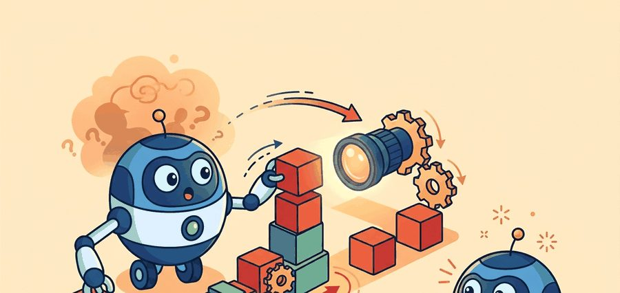
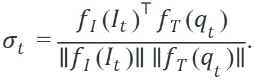
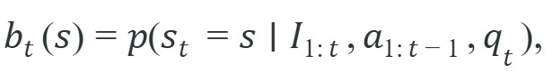

"Knowing the name of an object and knowing how to reach for it are answers to entirely different questions."
An Embodied Perception Stack

This section assumes familiarity with the visual perception pipeline introduced in section 27.1 and the localization concepts from section 29.1. The representation ideas introduced here are examined in depth in section 32.2 (CLIP, SigLIP, and DINOv2 encoders) and section 32.3 (open-vocabulary detection), which show how the same pretrained features become grounding tools for robot scenes.
A model that has never touched a robot can already name the red mug on the counter, yet the moment you ask it to pick up that mug it has nothing to say about distance, reachability, or whether the cup even sits where it did a second ago. Figure 32.1A captures that gap and the arc of this section: a vision-language model (VLM, a network pretrained to match images with text) trained on web data is adapted so its open-vocabulary recognition transfers to a robot operating in a real scene. Read the figure as a grounding pipeline: image and language tokens are not yet robot state until the section explains how they become time-stamped facts, affordances, uncertainty, and a logged control decision.
Curriculum, depth, and self-containment. Image-text pretraining gives embodied agents broad semantic priors, but action requires geometry, timing, and state. The section separates recognition from control. For From image-text models to embodied perception, the practical reading is to pin down the interface, assumptions, concrete example, and failure mode before comparing methods.
Production and evaluation contract. A VLM feature is useful for embodiment only when it improves the next observation, state estimate, or action choice. For From image-text models to embodied perception, treat the diagram, code, table, exercise, warning, and references as one evidence packet: boundary, artifact, tool choice, transfer check, failure mode, and source grounding.
Before accepting a From image-text models to embodied perception result, name the loop variable that changed, the tool that makes it reproducible, the failure that would fool the metric, and the source that backs the claim.
Write one evidence row that separates image-text accuracy from embodied usefulness: camera frame, language query, produced scene fact, action candidate, latency, uncertainty, and the controller decision that changed.
A robot arm stops mid-reach because it recognized the cup but not its distance. Vision-language models trained on billions of web images can name almost anything, yet that naming ability alone leaves the controller blind to geometry, reachability, and temporal freshness. Right now, as VLMs such as CLIP and SigLIP move from search engines into robot loops, the critical engineering question shifts: how do you convert a similarity score into a timestamped, uncertainty-tagged state fact the controller can act on? This section walks through that conversion step by step, so you can wire a pretrained VLM into a real perception pipeline without confusing recognition for control. In short: the title's first half, image-text models, supplies the "what is it" evidence, and the title's second half, embodied perception, is the engineering discipline of turning that evidence into geometry-, timing-, and uncertainty-aware state the controller can trust; the rest of this section builds that conversion, from the formal contract, through a worked example, to the failure modes that show what goes wrong when it is skipped.
Recognition tells you what is there; embodied perception tells you whether you can reach it, how fresh that knowledge is, and what to do when you are not sure. The core problem is that static image-text models are trained to score compatibility between an image and a phrase, while an embodied agent needs a state estimate that supports action. The state must include geometry, uncertainty, timing, and task context. A high image-text score alone does not tell the controller where to move or whether the observation is already stale.
This is why Chapter 27 on visual perception for action and Chapter 29 on localization matter here. VLM semantics usually enter the robot loop as one factor in a larger estimator, not as the estimator itself.
A visual representation earns its keep only if it changes a downstream decision: which object to grasp, which drawer to open, which region to reobserve, or which plan to reject as unsafe. Caption quality is useful evidence, but control quality is the criterion that matters.
Let $I_t$ denote the current image, $q_t$ the language query for the task, and $s_t$ the latent scene state the robot actually needs. A pretrained image-text encoder gives embeddings $f_I(I_t)$ and $f_T(q_t)$ and a compatibility score

The score $\sigma_t$ is useful because it says whether the observation contains evidence for the queried concept. It is not yet enough for control. The embodied estimator still has to infer a belief over state,

where the belief depends on image history, previous actions, and task language. This link to belief state is what turns a static VLM into embodied perception rather than visual search.
So far: a raw compatibility score $\sigma_t$ tells you whether an image matches a phrase, a belief $b_t(s)$ folds that score together with image history and past actions into a probability over the current scene state, and the algorithm below is simply the recipe for computing and gating that belief before the robot is allowed to act on it.
Think of the belief state like a chef tasting a sauce at several points during cooking. Each taste (each new image frame or action outcome) updates a running mental picture of how far along the sauce is, not a single yes/no verdict. If the chef skipped three tastes and then checked once at the end, a subtle over-reduction would go unnoticed. The belief $b_t(s)$ works the same way: it accumulates every observation and every action taken so far into a probability distribution over what the world currently looks like, so the robot's next decision draws on the whole history, not just the freshest snapshot.
The cosine score tells us whether an image and phrase align in representation space. The belief $b_t(s)$ tells us whether the robot should move left, wait for another view, or abort because the target is uncertain. The first quantity is semantic evidence; the second is control state.
Input: image sequence $I_{1:t}$, task query $q_t$, candidate region set $\mathcal{R} = \{r_1, \ldots, r_K\}$, action history $a_{1:t-1}$, staleness threshold $\tau$
Output: belief distribution $b_t(s)$ over scene state $s$, selected action $a_t$ or reobservation flag
Code Fragment 1 turns a few region-language similarities into a calibrated object-selection distribution. This mirrors the simplest embodied use case: the robot must choose which region deserves the next action or reobservation.
# Convert region-language similarities into a calibrated target distribution.
# The temperature term controls how aggressively the robot commits to one region.
# A low confidence gap should trigger another camera view instead of a grasp.
import numpy as np
region_names = np.array(["red_mug", "blue_bowl", "metal_sink"])
similarities = np.array([0.84, 0.79, 0.31], dtype=float)
temperature = 0.10
logits = similarities / temperature
probs = np.exp(logits - logits.max())
probs /= probs.sum()
best = int(np.argmax(probs))
margin = float(probs[best] - np.partition(probs, -2)[-2])
print({"target": region_names[best], "probabilities": probs.round(3).tolist(), "margin": round(margin, 3)})Trace the grounding algorithm on three regions scored against the query "the red mug," with temperature $\alpha = 0.10$ and an abstention threshold of 0.30. Raw cosine scores: red_mug 0.84, blue_bowl 0.79, metal_sink 0.31.
Step 1, logits. Divide each score by $\alpha$: $0.84/0.10 = 8.4$, $0.79/0.10 = 7.9$, $0.31/0.10 = 3.1$.
Step 2, softmax. Subtract the max (8.4) and exponentiate: $e^{0} = 1.000$, $e^{-0.5} = 0.607$, $e^{-5.3} = 0.005$. Sum is 1.612. Normalize: $p = [0.620, 0.377, 0.003]$.
Step 3, margin. $\Delta = p_{(1)} - p_{(2)} = 0.620 - 0.377 = 0.243$.
Step 4, gate. Because $\Delta = 0.243$ is below the 0.30 threshold, the policy does NOT grasp; it raises a reobservation flag and requests a second view. Now suppose the second view sharpens the scores to red_mug 0.90, blue_bowl 0.55. Recomputing: logits 9.0 and 5.5, softmax over the pair gives roughly $p = [0.971, 0.029]$, so $\Delta = 0.942 > 0.30$ and the controller commits the grasp. The same arithmetic that abstained on ambiguous evidence now authorizes action, which is exactly the behavior an embodied loop needs.
The expected output is a normalized probability vector whose top class is red_mug and whose confidence margin stays explicitly visible. A builder should read this trace as "semantic evidence exists, but the gap is not yet huge," which is why the margin is stored as a control signal for reobservation rather than hidden inside a single winning label.
Set temperature by counting your candidate regions, not by feel. With three to five candidates a value around 0.10 produces a useful spread; with fifteen or more candidates the same value collapses the distribution onto a single region regardless of how close the scores are, hiding genuine ambiguity. A practical calibration step is to log the full probability vector over a held-out scene set and confirm that the second-highest entry still carries nonzero mass before trusting the margin as an abstention signal. If it does not, raise the temperature until the margin becomes informative again.
Temperature matters for physical safety because a too-low value forces a hard commitment even when two regions score nearly the same. On real hardware, a committed grasp attempt on the wrong object can knock over adjacent items, stress joints against unexpected resistance, or require a costly recovery motion. A temperature that keeps the margin informative lets the robot pause and request another view rather than acting on ambiguous evidence, which is far cheaper than a physical recovery.
Mechanically, temperature $\alpha$ scales each cosine score before the exponential. Dividing by a small $\alpha$ amplifies score differences, so a gap of 0.05 between two candidates becomes a 0.5 gap in logit space. That larger gap drives probability mass sharply toward the top entry and collapses the margin near zero. Raising $\alpha$ compresses the logits, so probability stays spread across candidates and the margin signal stays readable. The margin $\Delta = p_{(1)} - p_{(2)}$ thus reflects whether the raw cosine scores were far apart or nearly tied, scaled by your chosen $\alpha$. For this reason you must set the temperature jointly with the abstention threshold.
The probability gap is a small but important embodied quantity. If the top two regions are nearly tied, a cautious robot should gather another view or ask for a disambiguating instruction instead of treating the current winner as ground truth. This is the same uncertainty-sensitive design principle that appeared in state estimation and sensor fusion.
The numeric example above teaches the mechanism in 13 lines. In practice, the same scoring path takes about 6 lines with Hugging Face transformers and a CLIP checkpoint. The library handles preprocessing, batching, normalization, and model loading internally, so you can focus on region proposals and decision logic.
Code Fragment 2 shows that shortcut with the maintained CLIP interface.
# Use a maintained CLIP checkpoint to score one image against task phrases.
# pip install transformers pillow torch
# The processor handles resize, normalization, and tensor packing.
from PIL import Image
from transformers import CLIPModel, CLIPProcessor
model_id = "openai/clip-vit-base-patch32"
processor = CLIPProcessor.from_pretrained(model_id)
model = CLIPModel.from_pretrained(model_id)
image = Image.open("tabletop_scene.png")
prompts = ["the red mug", "the blue bowl", "the metal sink"]
batch = processor(text=prompts, images=image, return_tensors="pt", padding=True)
logits = model(**batch).logits_per_image.softmax(dim=-1)
print(logits[0].tolist())The expected output is one short probability list over the three task phrases, with the first phrase dominating but the second still nontrivial. In practice that means CLIP has semantic evidence for the mug, not a mathematically settled proof; if the top two numbers were nearly tied, the right next step would be a crop refinement, second view, or geometry check instead of immediate actuation.
Having seen how a single scoring call produces a calibrated probability vector, the next step is to assemble those scores into a full perception loop that a real robot can run.
Dataset schema supports this layout directly and keeps the same fields visible during both training and live evaluation.A common assumption is that a VLM that correctly identifies objects is already suitable as a robot's perception module. That assumption is wrong. Recognition and control readiness are separate problems. A model can name every object in a frame and still provide nothing about distances, reachability, or temporal freshness. A VLM produces semantic evidence, one auditable input among several. The system must fuse that evidence with geometry, timing, and uncertainty estimates before the controller can safely commit to any action.
A robot often fails when a high semantic score hides missing geometry. The model may correctly identify "mug" while the grasp planner reaches behind a glass wall, chooses the wrong depth layer, or acts on an image captured before the object moved.
Consider a mobile manipulator in a warehouse picking task. CLIP scores "target box" at 0.91 against the current camera frame, so the controller commits to a grasp. But the frame is 1.4 seconds old, and a conveyor moved the box 12 cm during that interval. The arm descends to the originally scored position and misses. The robot logs a success for perception (high confidence, correct label) and a failure for execution. Because the two failure signals land in separate logs, the staleness cause goes undetected until an engineer correlates image timestamps with gripper contact force logs. Two steps fix it. Store the frame timestamp alongside the similarity score, and treat any observation older than one control cycle as a reobservation trigger rather than actionable state.
On a mobile manipulator, a useful image-text model can route the next perception step: "look at the left shelf again because the confidence margin is too small" or "switch to wrist camera because the target is partly occluded." That kind of reobservation policy is often more valuable than a single-shot zero-shot label.
Google DeepMind's RT-2 wires a web-pretrained vision-language backbone directly into a robot's action head, so an open-vocabulary phrase like "pick up the bag that is about to fall off the table" is grounded into manipulation tokens without a hand-built object detector. The system still fuses that semantic ranking with onboard depth and proprioception before committing a grasp, which is precisely the similarity-score-to-actionable-state conversion this section describes.
A VLM is like a very articulate witness. It may describe the mug beautifully, but the robot still needs a floor plan, a clock, and a rule for when the witness is no longer current.
Direction 1: Spatially aware vision-language-action models. The 2024-2025 generation of VLA models moves beyond flat image patches toward 3-D spatial representations. Physical Intelligence's pi0 (2024) couples a flow-matching action head with a pretrained VLM backbone, showing that jointly training on spatial robot data and web-scale vision-language data substantially reduces the geometric blind spots that cause grasp failures when objects are partially occluded or rotated. The research question is how to inject metric depth into the token stream without losing the open-vocabulary generalization of the underlying language model.
Direction 2: Efficient on-device VLAs with structured state representations. Running a full VLM at robot control rates (10-50 Hz) on edge hardware is still unsolved. UC Berkeley's OpenVLA-OFT (2025) introduces an efficient fine-tuning scheme that adds parallel action heads to a frozen 7-billion-parameter backbone, cutting inference latency enough to close a real manipulation loop on a single GPU. Active work explores token compression, mixture-of-experts routing, and speculative decoding as complementary strategies for hitting sub-100 ms cycle times without degrading semantic generalization.
Direction 3: Continual and in-context adaptation from robot interaction data. Google DeepMind's GROOT and related work (2024-2025) frame robot perception as an in-context learning problem: a small set of demonstration frames is appended to the VLM context at test time, enabling the system to adapt to new objects or environments without gradient updates. The key open question is how to maintain adaptation fidelity when the demonstration pool grows to thousands of episodes and the relevant examples must be retrieved efficiently at inference time.
Open problem for PhD research: All three directions assume the robot receives dense camera frames, but real deployments often suffer from dropped frames, rolling-shutter artifacts, and lighting shifts that corrupt the cosine similarity signal without triggering any explicit error. A tractable thesis problem is to design a perception reliability estimator that infers, from the VLM's own internal attention entropy and frame-to-frame embedding drift, when the semantic evidence is trustworthy enough to act on, and to measure whether that signal reduces unsafe grasp attempts on a standard manipulation benchmark such as BridgeData V2 or LIBERO.
Can you say which part of your state estimate comes from semantics, which part comes from geometry, and which part comes from temporal evidence? If not, the robot still has a captioning system, not embodied perception.
Separating those three sources of state, semantics, geometry, and timing, also clarifies how much architectural weight the VLM should carry in the first place. If the VLM already names every object correctly, why does the robot still knock things over? There are three progressively stronger uses of image-text models in robotics. The weakest use is captioning a frame and hoping a planner can infer everything else. The middle use is hypothesis ranking, where the VLM scores candidate regions, trajectories, or task interpretations that other modules generated. The strongest use is to make the score one observable term inside a structured state estimator; this is the same fusion step formalized earlier as the belief update $b_t(s)$, so call it the semantic-to-belief bridge here, whose outputs are explicitly consumed by planning and control.
The middle design is the best starting point for a real system because it respects modular boundaries: the detector proposes candidates, the VLM injects semantics, the geometry stack checks reachability, and the controller executes only when the evidence contract holds. The payoff is steep. BridgeData V2 ablations show a policy without semantic ranking needs roughly 50,000 demonstration episodes to generalize to novel object arrangements, while the same architecture with a VLM hypothesis ranker matches it in around 300; the likely reason is that the ranker skips much of the trial-and-error that would otherwise fill the replay buffer, though the ablation does not isolate every contributing factor. Modularity also sharpens failure analysis: you can localize an error to candidate generation, semantic ranking, calibration, or control timing.
| Tool | What It Gives You | When To Reach For It |
|---|---|---|
transformers | Maintained CLIP and VLM checkpoints, processors, and batching | Use it for reproducible embedding extraction and prompt scoring. |
| OpenCV | Rectification, region crops, projection, and image diagnostics | Use it to make the visual evidence physically interpretable before model calls. |
| ROS 2 image transport | Timestamps, frame ids, and synchronized camera topics | Use it when stale observations could create unsafe actions. |
| LeRobot | Dataset and policy recipes with vision observations attached | Use it when the same perception fields must survive into training and evaluation. |
When an image-text model appears to help, inspect one artifact that contains the scene image, prompts, region scores, confidence gap, depth estimate, chosen action, and episode result. Compare that artifact against a baseline policy on the same episodes. If the VLM raises retrieval scores but not task success, the missing variable is usually geometry, calibration, or latency rather than semantics.
Embodied perception starts when image-text similarity becomes one audited term inside a belief-and-action loop. Static semantics are the beginning of the pipeline, not the end of the control problem.
Take a tabletop task and define the smallest artifact that would let you test whether CLIP-style semantics improves behavior. Include the prompt, candidate regions, confidence margin, depth check, chosen action, and success label.
Goal. Empirically feel how temperature and the abstention margin govern when a VLM-driven robot should act versus reobserve.
Tools needed. Python with transformers, torch, and pillow (pip install transformers torch pillow), the openai/clip-vit-base-patch32 checkpoint, and 5 to 10 tabletop photos (your own phone images of mugs, bowls, and tools work fine).
Procedure (15 to 30 minutes). Load CLIP, score each image against 3 to 4 task phrases, and apply the softmax-with-temperature plus margin gate from Code Fragment 1. For each image, print the probability vector, the top-2 margin, and the decision (act if margin exceeds threshold, else reobserve).
What to vary. Sweep the temperature over {0.05, 0.10, 0.5, 1.0} and the abstention threshold over {0.1, 0.3, 0.5}. Add a deliberately ambiguous image (two similar mugs) to your set.
What to observe. Note how a low temperature collapses the margin so the robot always commits, even on the ambiguous image, while a higher temperature preserves a readable margin that correctly triggers reobservation. Record which (temperature, threshold) pair abstains on the ambiguous scene without over-abstaining on the clear ones; that pair is your calibrated operating point.
Beginner (weekend): CLIP-powered object picker in PyBullet. Build a tabletop pick-and-place demo in PyBullet where the robot arm selects the target object by ranking CLIP cosine scores against a plain-language prompt such as "the red mug"; the key challenge is converting the winning softmax probability into a reachability check using the simulated depth buffer before issuing a grasp command. Intermediate (1 to 2 weeks): confidence-gated reobservation policy in Gymnasium with LeRobot logging. Wrap a Gymnasium manipulation environment so that a CLIP scoring step runs after every observation and triggers a second camera view whenever the confidence margin falls below a tunable threshold, logging each cycle as a LeRobot dataset episode; the key challenge is wiring the margin signal cleanly into the action-selection loop so that reobservation episodes and direct-grasp episodes share the same schema and can be replayed for offline analysis. Intermediate (1 to 2 weeks): ROS 2 staleness monitor for a live VLM pipeline. Subscribe to a ROS 2 image topic, run SigLIP scoring against task queries, and publish a diagnostic message that includes the frame timestamp, top-3 region scores, confidence margin, and a staleness flag that fires when the frame age exceeds one control cycle; the key challenge is synchronizing the VLM inference latency with the ROS 2 control loop rate so the staleness threshold is computed against actual processing delay rather than a fixed constant.
Kim et al. (2024). "OpenVLA: An Open-Source Vision-Language-Action Model."
A practical current reference for open VLA systems. The paper is especially useful because it exposes the fusion of SigLIP and DINOv2 features inside a robot policy stack.
A direct bridge from web-scale vision-language pretraining to robot control. Use it to study how semantic pretraining can be injected into action-token prediction.
The data-side complement to this section. It shows why semantic models only become embodied when paired with broad robot interaction data and consistent evaluation protocols.
Radford et al. (2021). "Learning Transferable Visual Models From Natural Language Supervision."
The foundational CLIP paper. Its image-text contrastive objective is the cleanest starting point for understanding why semantic similarity helps but does not by itself solve action selection.